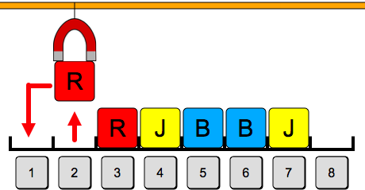

Magneettinosturi
Siirrä laatikot vastaamaan tavoitetta käyttäen magneettinosturia, jota ohjataan klikkailemalla harmaita numeroituja nappeja.
Saat sitä enemmän pisteitä, mitä vähemmän askeleita suoritat.
|
Tavoite: |
Siirrä laatikot vastaamaan tavoitetta käyttäen magneettinosturia, jota ohjataan klikkailemalla harmaita numeroituja nappeja.
Saat sitä enemmän pisteitä, mitä vähemmän askeleita suoritat.
|
Tavoite: |
Sinisen ja punaisen laatikon vaihtaminen keskenään vaatii, että yksi niistä laitetaan keskellä olevaan tyhjään paikkaan. Tämän jälkeen toinen laitetaan siirretyn laatikon paikalle ja keskelle siirretty laatikko puolestaan toisen paikalle.
Tämä onnistuu esimerkiksi klikkaamalla nappeja järjestyksessä 1 2 3 1 2 3, jolloin nosturi siirtää laatikot seuraavasti:
 |
 |
 |
 |
Voimme huomata, että tavoitteeseen pääsee vapauttamalla laatikkorivin jomman kumman pään, ja siirtämällä sen jälkeen laatikkoriviä askeleen verran, täyttämään tämä tyhjä paikka. Aluksi siirretty laatikko siirretään lopuksi laatikkorivin siirtämisen vapauttamaan toisen pään paikkaan. Tämä periaate on kuvattu alla:
| Vaihe 1: Vapautetaan laatikkorivin vasen pää. | Vaihe 2: Siirretään kaikkia jäljellä olevia laatikkorivin laatikoita askel. | Vaihe 3: Siirretään aluksi siirretty laatikko laatikkorivin toisesta päästä vapautuneeseen paikkaan. |
 |
Yllä kuvattujen vaiheiden mukaiset siirrot saadaan aikaiseksi klikkaamalla nappeja järjestyksessä 2 1 3 2 4 3 5 4 6 5 7 6 1 7. On olemassa myös muita vaihtoehtoisia ratkaisuita.
Yksi ratkaisutapa on vapauttaa aluksi yksi paikka, ja toimimalla sen jälkeen seuraavasti: kullakin seuraavalla askeleella siirrämme edellisen askeleen vapauttamaan paikkaan oikeanvärisen laatikon (joka ei vielä ollut oikeassa paikassa, ja joka ei ole alussa siirretty laatikko). Alussa siirretty laatikko laitetaan lopuksi viimeiseen vapautuneeseen paikkaan.
Tämä periaate siirtää ensiksi siirrettyä laatikkoa kaksi kertaa ja jokaista muuta laatikkoa vain kerran. Tehtävään ei ole olemassa tehokkaampaa ratkaisuperiaatetta, mutta erilaisia tämän periaatteen mukaisia ratkaisuja on useita. Alla on kuvattu eräs.
| Vapautetaan yksi paikka. | Täytetään vapautunut paikka. | Täytetään vapautunut paikka. |
|  |  |
|
| Täytetään vapautunut paikka. | Täytetään vapautunut paikka. | Täytetään vapautunut paikka. |
 |
||
| Alussa siirretty laatikko viimeiseen vapautuneeseen paikkaan. | Valmis ratkaisu. | |
Yllä kuvattu ratkaisu vastaa klikkauksia 2 1 4 2 5 4 3 5 7 3 6 7 1 6.
Tehtävä sivuaa tietojenkäsittelyssä nimellä eheyttäminen tunnettua tehtävää. Tietokoneen toiminnan aikana muistiin yleensä aika ajoin sekä tallennetaan että sieltä vapautetaan dataa. Tämä voi johtaa pirstaloitumiseen, jossa muistiin tallennettu data sijaitsee hajallaan ympäri muistia. Pirstaloituminen voi johtaa ongelmiin, koska sen myötä ei välttämättä voida enää varata uusia suuria yhtenäisiä vapaita muistialueita, vaikka muistia sinänsä olisi riittävästi vapaana: vapaa muisti sijaitsee hajaantuneesti pienemmissä osissa ympäri muistia. Monet datan tallennustarpeet kuitenkin edellyttävät nimenomaan yhtenäisen muistialueen varaamista.
Muistin pirstaloitumisen tuomia ongelmia voidaan ehkäistä eheyttämällä muisti. Tämä tarkoittaa, että muistiin hajanaisesti tallennetut datat uudelleenorganisoidaan (eli siirretään) muistissa niin, että vapaat muistialueet tulevat yhtenäisiksi. Eheyttäminen halutaan tehdä mahdollisimman tehokkaasti eli niin, että tarvitaan mahdollisimman vähän datan siirto-operaatioita (tehtävässä esiintyi tämä aspekti).Toinen pirstaloitumisen ja eheyttämisen kohde on varsinkin perinteiset mekaaniset kiintolevyt, joissa levyn mekaanisen toimintaperiaatteen vuoksi tiedostot kannattaisi tallettaa yhtenäisinä kokonaisuuksina. Perinteisten kiintolevyjen tilalle tulleissa SSD-levyissä pirstaloituminen ei ole niin suuri ongelma.
Levyjen ja muistin pirstaloituminen poikkeavat siinä mielessä toisistaan, että levyt jo lähtökohtaisesti voivat tallettaa tiedostoja myös pienissä osissa eri puolille levyä. Muistinvaraus sen sijaan yleensä edellyttää yhtenäisen vapaan muistialueen löytymistä.
Katso lisää esim. https://fi.wikipedia.org/wiki/Eheyttäminen_(tietotekniikka) ja https://en.wikipedia.org/wiki/Fragmentation_(computing) (englanniksi).